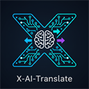

How to start the subscription bridge
The bridge runs locally and uses the provider CLI session.
-
Install the CLI for the selected provider.
-
Sign in to the provider account.
-
From the extension repository root, start the local bridge.
node bridge/server.mjs - Return to Settings, select Subscription, and click Connect.
Keep the bridge terminal running while using subscription mode. API-key mode remains available at any time.